“西游之行”路线图
采荷中学 723班 33号 吴少荃
花果山
唐僧在如来佛祖的指引下，前往花果山取得西天取经的任务。 唐僧在如来佛祖的指引下，前往花果山取得西天取经的任务。
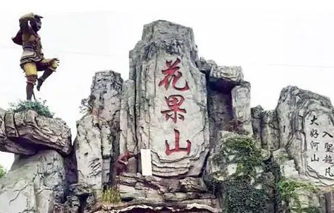
琵琶洞
唐僧在琵琶洞遇到了蝎子精，并通过孙悟空借来观音菩萨的净瓶水成功破法。 唐僧在琵琶洞遇到了蝎子精，并通过孙悟空借来观音菩萨的净瓶水成功破法。
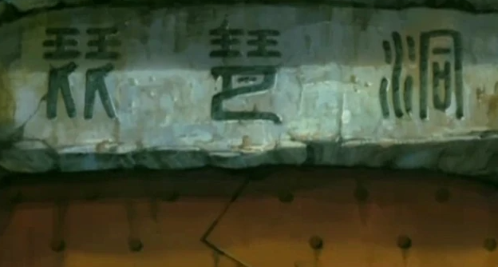
高老庄
唐僧在高老庄收猪八戒为徒弟，并在那里遇到了老鼠精和野猪精等妖怪，通过孙悟空的变化术和借来的天兵天将的助力成功破法。 唐僧在高老庄收猪八戒为徒弟，并在那里遇到了老鼠精和野猪精等妖怪，通过孙悟空的变化术和借来的天兵天将的助力成功破法。
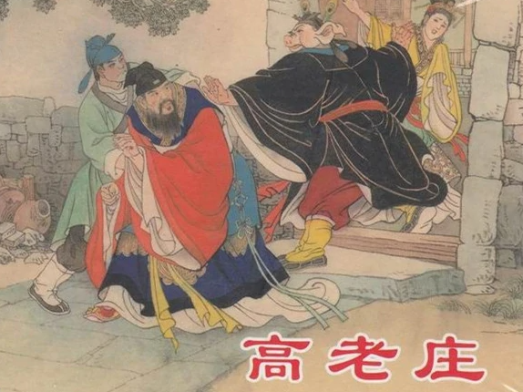
流沙河
唐僧在流沙河收了沙僧为徒弟，并遇到了灵感大王等妖怪，通过孙悟空和观音菩萨的助力成功破法。 唐僧在流沙河收了沙僧为徒弟，并遇到了灵感大王等妖怪，通过孙悟空和观音菩萨的助力成功破法。
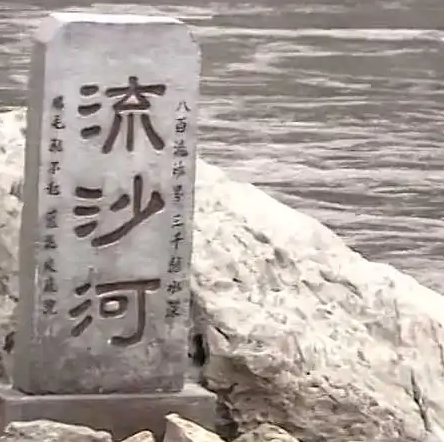
火焰山
师徒四人在火焰山上遇到了牛魔王等妖怪，最终通过孙悟空借来天兵天将和观音菩萨的助力，成功收服牛魔王等妖怪。 师徒四人在火焰山上遇到了牛魔王等妖怪，最终通过孙悟空借来天兵天将和观音菩萨的助力，成功收服牛魔王等妖怪。
蜘蛛洞
在女儿国中，师徒四人遇到了蜘蛛精和蝎子精等妖怪，最终通过孙悟空的变化术和借来的观音菩萨的净瓶水成功破法。 在女儿国中，师徒四人遇到了蜘蛛精和蝎子精等妖怪，最终通过孙悟空的变化术和借来的观音菩萨的净瓶水成功破法。
天竺国
师徒四人在天竺国遇到了白鹿精和青鹿精等妖怪，最终通过借来的如来佛祖的助力成功破法。 师徒四人在天竺国遇到了白鹿精和青鹿精等妖怪，最终通过借来的如来佛祖的助力成功破法。
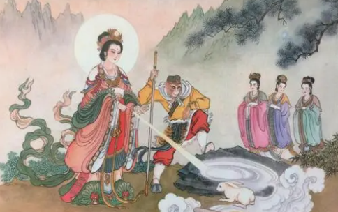
金平府
师徒四人在金平府遇到了三个犀牛精，最终通过借来的天兵天将和普贤菩萨的助力成功破法。 师徒四人在金平府遇到了三个犀牛精，最终通过借来的天兵天将和普贤菩萨的助力成功破法。
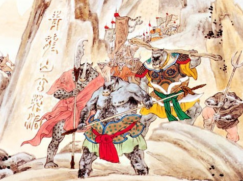
金山寺
师徒四人在金山寺遇到了老鼠精和蜈蚣精等妖怪，最终通过借来的李天王和哪吒的助力成功破法。 师徒四人在金山寺遇到了老鼠精和蜈蚣精等妖怪，最终通过借来的李天王和哪吒的助力成功破法。
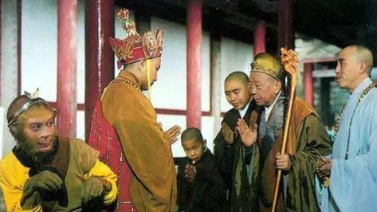
慈云寺
师徒四人在慈云寺遇到了白骨精和红孩儿等妖怪，最终通过孙悟空的变化术和观音菩萨的助力成功破法。 师徒四人在慈云寺遇到了白骨精和红孩儿等妖怪，最终通过孙悟空的变化术和观音菩萨的助力成功破法。
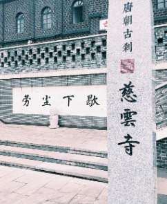
宝华山
师徒四人在宝华山遇到了白象精和黑熊精等妖怪，最终通过借来的天兵天将和观音菩萨的助力成功破法。 师徒四人在宝华山遇到了白象精和黑熊精等妖怪，最终通过借来的天兵天将和观音菩萨的助力成功破法。
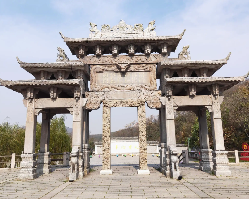
盘丝洞
在盘丝洞中，师徒四人遇到了蜘蛛精和蜈蚣精等妖怪，最终通过孙悟空的变化术和如来佛祖的助力成功破法。 在盘丝洞中，师徒四人遇到了蜘蛛精和蜈蚣精等妖怪，最终通过孙悟空的变化术和如来佛祖的助力成功破法。
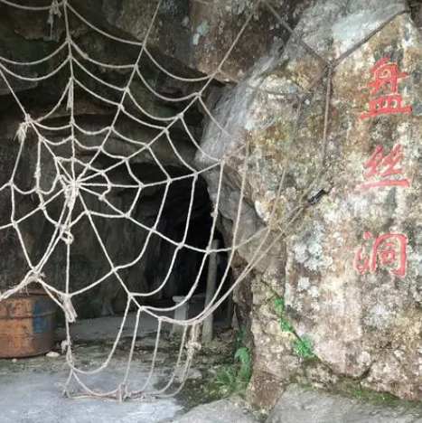
灵鹫宫
师徒四人在灵鹫宫遇到了老妖王和银角大王等妖怪，最终通过孙悟空的变化术和如来佛祖的助力成功破法。 师徒四人在灵鹫宫遇到了老妖王和银角大王等妖怪，最终通过孙悟空的变化术和如来佛祖的助力成功破法。
雷音寺
师徒四人在雷音寺经过诸多磨难，最终取得了真经，完成了西天取经的任务。 师徒四人在雷音寺经过诸多磨难，最终取得了真经，完成了西天取经的任务。
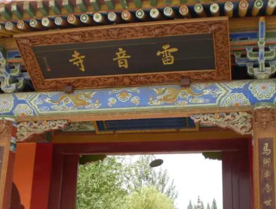